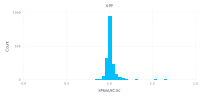
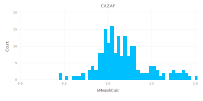
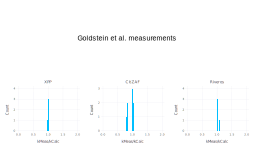
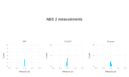
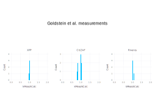
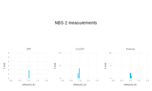

Comparing Matrix Correction Algorithms
Nicholas W. M. Ritchie 15-May-2020 Added Riveros 12-Jun-2020
Testing matrix correction algorithms XPP and CitZAF against the k-ratio database published by Heinrich in "X-Ray Spectroscopy in Electron Beam Instruments" (1995)
Look to the end of the document for various interesting plots.
using CSV
using DataFrames
using NeXLMatrixCorrection
heinrich =DataFrame!(CSV.File(joinpath(@__DIR__,"Heinrich1995kratios.csv"), header=18, skipto=19))
trss = Dict("Kα"=>kalpha, "Kβ"=>kbeta, "Lα"=>lalpha, "Lβ"=>lbeta, "Mα"=>malpha, "Mβ"=>mbeta)
trsnames = Dict(1=>"Kα", 2=>"Kβ", 3=>"Lα", 4=>"Lβ", 8=>"Mα", 9=>"Mβ")
heinrich.Z1 = map(z->elements[z].symbol, heinrich.Z1)
heinrich.Z2 = map(z->elements[z].symbol, heinrich.Z2)
heinrich.Line = map(l->trsnames[l], heinrich.Line)
xppres, czres, rivres = Union{Float64,Missing}[], Union{Float64,Missing}[], Union{Float64,Missing}[]
for r in eachrow(heinrich)
a, b = parse(Element,r.Z1), parse(Element,r.Z2)
e0, θ = convert(Float64,r.E0), deg2rad(r.TOA)
std, unk = pure(a), material("Unknown",Dict(a=>r.C1, b=>1.0-r.C1))
kk, lines = r.Kexp, [ brightest(characteristic(a, trss[r.Line])), ]
try
algs = zafcorrection(XPP, ReedFluorescence, NullCoating, unk, std, lines, e0)
push!(xppres, k(algs..., θ, θ)/kk)
catch c
@show c
push!(xppres, missing)
end
try
algs = zafcorrection(CitZAF, ReedFluorescence, NullCoating, unk, std, lines, e0)
push!(czres, k(algs..., θ, θ)/kk)
catch c
@show c
push!(czres, missing)
end
try
algs = zafcorrection(Riveros1993, ReedFluorescence, NullCoating, unk, std, lines, e0)
push!(rivres, k(algs..., θ, θ)/kk)
catch c
@show c
push!(rivres, missing)
end
end
insertcols!(heinrich, ncol(heinrich)+1, :XPP=>xppres)
insertcols!(heinrich, ncol(heinrich)+1, :CitZAF=>czres)
insertcols!(heinrich, ncol(heinrich)+1, :Riveros=>rivres)
#display(show(dropmissing!(heinrich)))# Items 857 to 860 see to be in error.
filter!(r->!(r.Item in 857:860), sort!(heinrich,:XPP))
# The columns XPP and CitZAF represent the measured k-ratio over the computed k-ratio for these algorithms.
# Display the table sorted by XPP
display(heinrich)1821×13 DataFrame. Omitted printing of 5 columns
│ Row │ Item │ Line │ Z1 │ Z2 │ C1 │ E0 │ Ec │ TOA
│
│ │ Int64 │ String │ String │ String │ Float64 │ Int64 │ Int64 │ Float
64 │
├──────┼───────┼────────┼────────┼────────┼─────────┼───────┼───────┼──────
───┤
│ 1 │ 136 │ Kα │ B │ Zr │ 0.1789 │ 30000 │ 188 │ 40.0
│
│ 2 │ 135 │ Kα │ B │ Zr │ 0.1789 │ 25000 │ 188 │ 40.0
│
│ 3 │ 134 │ Kα │ B │ Zr │ 0.1789 │ 20000 │ 188 │ 40.0
│
│ 4 │ 133 │ Kα │ B │ Zr │ 0.1789 │ 15000 │ 188 │ 40.0
│
│ 5 │ 132 │ Kα │ B │ Zr │ 0.1789 │ 12000 │ 188 │ 40.0
│
│ 6 │ 131 │ Kα │ B │ Zr │ 0.1789 │ 10000 │ 188 │ 40.0
│
│ 7 │ 130 │ Kα │ B │ Zr │ 0.1789 │ 8000 │ 188 │ 40.0
│
⋮
│ 1814 │ 188 │ Kα │ B │ U │ 0.1537 │ 10000 │ 188 │ 40.0
│
│ 1815 │ 861 │ Kα │ Cu │ Zn │ 5.65 │ 10100 │ 8980 │ 40.0
│
│ 1816 │ 124 │ Kα │ B │ Ni │ 0.144 │ 8000 │ 188 │ 40.0
│
│ 1817 │ 189 │ Kα │ B │ U │ 0.1537 │ 12000 │ 188 │ 40.0
│
│ 1818 │ 190 │ Kα │ B │ U │ 0.1537 │ 15000 │ 188 │ 40.0
│
│ 1819 │ 165 │ Kα │ B │ Nd │ 0.31 │ 10000 │ 188 │ 40.0
│
│ 1820 │ 328 │ Kα │ Al │ Fe │ 0.1 │ 2000 │ 1559 │ 75.0
│
│ 1821 │ 166 │ Kα │ B │ Nd │ 0.31 │ 15000 │ 188 │ 40.0
│XPP
Let's visualize this.
using Gadfly
plotargs = ( Stat.histogram(bincount=50), Geom.bar, Guide.xlabel("kMeas/kCalc"), Guide.ylabel("Count"), Coord.cartesian(xmin=0.0, xmax=2.0) )
plot(heinrich, x=:XPP, plotargs..., Guide.title("XPP"))
CitZAF
plot(heinrich, x=:CitZAF, plotargs..., Guide.title("CitZAF"))Riveros
plot(heinrich, x=:Riveros, plotargs..., Guide.title("Riveros"))Summary Statistics
describe(heinrich[:,end-2:end], :mean, :std, :min, :q25, :median, :q75, :max)3×8 DataFrame. Omitted printing of 2 columns
│ Row │ variable │ mean │ std │ min │ q25 │ median │
│ │ Symbol │ Float64 │ Float64 │ Float64 │ Float64 │ Float64 │
├─────┼──────────┼─────────┼──────────┼──────────┼──────────┼──────────┤
│ 1 │ XPP │ 1.02407 │ 0.11594 │ 0.416139 │ 0.988486 │ 1.00252 │
│ 2 │ CitZAF │ 1.0077 │ 0.144751 │ 0.438618 │ 0.957969 │ 0.993088 │
│ 3 │ Riveros │ 1.06529 │ 0.247911 │ 0.0 │ 1.00233 │ 1.02406 │Low Z Performance
Let's look at the relative performance for low Z elements (z<8). Sadly, there is no O data :-(
lowZ = filter(r->z(parse(Element,r.Z1))<8, heinrich)
describe(lowZ[:,end-2:end], :mean, :std, :min, :q25, :median, :q75, :max)3×8 DataFrame. Omitted printing of 2 columns
│ Row │ variable │ mean │ std │ min │ q25 │ median │
│ │ Symbol │ Float64 │ Float64 │ Float64 │ Float64 │ Float64 │
├─────┼──────────┼─────────┼──────────┼──────────┼──────────┼─────────┤
│ 1 │ XPP │ 1.14396 │ 0.289023 │ 0.416139 │ 0.986049 │ 1.05951 │
│ 2 │ CitZAF │ 1.20833 │ 0.341309 │ 0.438618 │ 0.991009 │ 1.13112 │
│ 3 │ Riveros │ 1.25253 │ 0.655883 │ 0.0 │ 1.02788 │ 1.16089 │display(plot(lowZ, x=:CitZAF, plotargs..., Guide.title("CitZAF")))
display(plot(lowZ, x=:XPP, plotargs..., Guide.title("XPP")))display(plot(lowZ, x=:Riveros, plotargs..., Guide.title("Riveros")))Let's find out which are the "problem children".
display(sort!(filter(r->abs(1.0-r.XPP)>0.2, lowZ),:XPP))59×13 DataFrame. Omitted printing of 5 columns
│ Row │ Item │ Line │ Z1 │ Z2 │ C1 │ E0 │ Ec │ TOA
│
│ │ Int64 │ String │ String │ String │ Float64 │ Int64 │ Int64 │ Float6
4 │
├─────┼───────┼────────┼────────┼────────┼─────────┼───────┼───────┼───────
──┤
│ 1 │ 136 │ Kα │ B │ Zr │ 0.1789 │ 30000 │ 188 │ 40.0
│
│ 2 │ 135 │ Kα │ B │ Zr │ 0.1789 │ 25000 │ 188 │ 40.0
│
│ 3 │ 134 │ Kα │ B │ Zr │ 0.1789 │ 20000 │ 188 │ 40.0
│
│ 4 │ 133 │ Kα │ B │ Zr │ 0.1789 │ 15000 │ 188 │ 40.0
│
│ 5 │ 132 │ Kα │ B │ Zr │ 0.1789 │ 12000 │ 188 │ 40.0
│
│ 6 │ 131 │ Kα │ B │ Zr │ 0.1789 │ 10000 │ 188 │ 40.0
│
│ 7 │ 130 │ Kα │ B │ Zr │ 0.1789 │ 8000 │ 188 │ 40.0
│
⋮
│ 52 │ 125 │ Kα │ B │ Ni │ 0.144 │ 10000 │ 188 │ 40.0
│
│ 53 │ 111 │ Kα │ B │ Ni │ 0.0578 │ 12000 │ 188 │ 40.0
│
│ 54 │ 188 │ Kα │ B │ U │ 0.1537 │ 10000 │ 188 │ 40.0
│
│ 55 │ 124 │ Kα │ B │ Ni │ 0.144 │ 8000 │ 188 │ 40.0
│
│ 56 │ 189 │ Kα │ B │ U │ 0.1537 │ 12000 │ 188 │ 40.0
│
│ 57 │ 190 │ Kα │ B │ U │ 0.1537 │ 15000 │ 188 │ 40.0
│
│ 58 │ 165 │ Kα │ B │ Nd │ 0.31 │ 10000 │ 188 │ 40.0
│
│ 59 │ 166 │ Kα │ B │ Nd │ 0.31 │ 15000 │ 188 │ 40.0
│Performance by Data Source
Let's look at the relative performance by data source
vcat(map(org->describe(filter(r->r.Origin==org, heinrich)[:,end-2:end], :mean, :std, :min, :q25, :median, :q75, :max), 1:11)...)33×8 DataFrame. Omitted printing of 2 columns
│ Row │ variable │ mean │ std │ min │ q25 │ median │
│ │ Symbol │ Float64 │ Float64 │ Union… │ Union… │ Union… │
├─────┼──────────┼──────────┼───────────┼──────────┼──────────┼──────────┤
│ 1 │ XPP │ 1.06108 │ 0.197942 │ 0.416139 │ 0.988139 │ 1.00165 │
│ 2 │ CitZAF │ 1.09749 │ 0.247607 │ 0.438618 │ 0.988467 │ 1.02458 │
│ 3 │ Riveros │ 1.13373 │ 0.460387 │ 0.0 │ 1.02261 │ 1.04829 │
│ 4 │ XPP │ 1.0013 │ 0.0302697 │ 0.919383 │ 0.988511 │ 1.00496 │
│ 5 │ CitZAF │ 0.930553 │ 0.0886838 │ 0.773003 │ 0.850813 │ 0.963248 │
│ 6 │ Riveros │ 1.01054 │ 0.0278175 │ 0.930001 │ 1.00188 │ 1.00995 │
│ 7 │ XPP │ 1.02806 │ 0.0520892 │ 0.889167 │ 0.998981 │ 1.01122 │
⋮
│ 26 │ CitZAF │ 0.996435 │ 0.0311259 │ 0.918866 │ 0.985224 │ 0.993082 │
│ 27 │ Riveros │ 1.06719 │ 0.0712832 │ 0.994109 │ 1.00628 │ 1.02026 │
│ 28 │ XPP │ NaN │ NaN │ │ │ │
│ 29 │ CitZAF │ NaN │ NaN │ │ │ │
│ 30 │ Riveros │ NaN │ NaN │ │ │ │
│ 31 │ XPP │ 0.998633 │ 0.0182596 │ 0.959832 │ 0.987556 │ 0.99676 │
│ 32 │ CitZAF │ 1.01093 │ 0.0235833 │ 0.957343 │ 0.994074 │ 1.00831 │
│ 33 │ Riveros │ 1.01996 │ 0.0170493 │ 0.997234 │ 1.00773 │ 1.01486 │using Compose
origins = Dict(
1 =>"Bastin’s measurements of borides",
2 => "Goldstein et al. measurements",
3 => "J. Colby and D. K. Conley’s measurements",
4 => "NBS 1 measurements",
5 => "Pouchou’s compilation",
6 => "Sewell et al. compilation",
7 => "Bastin Data Basis",
8 => "NBS 2 measurements",
9 => "P. F. Hlava’s (Sandia) measurements",
10 => "Schreiber’s measurements",
11 => "Bastin compilation" )
set_default_graphic_size(10inch,6inch)
for origin in 1:11
df = filter(r->r.Origin==origin, heinrich)
if nrow(df)>0
display(vstack(
compose(context(), text(0.5, 0.5, origins[origin], hcenter, vcenter), font("Arial"), fontsize(20pt)),
hstack(
plot(df, x=:XPP, plotargs..., Guide.title("XPP")),
plot(df, x=:CitZAF, plotargs..., Guide.title("CitZAF")),
plot(df, x=:Riveros, plotargs..., Guide.title("Riveros"))
)))
end
end  
 
Let's look more closely at Paul's data as XPP shows an anomylous dual hump behavior while CitZAF doesn't. Puzzling????
hlava = filter(r->r.Origin==9, heinrich)
weird = sort!(filter(r->r.XPP>1.05, hlava), :XPP)
notweird = sort!(filter(r->r.XPP<=1.05, hlava), :XPP)
hstack(
plot(weird, x=:XPP, plotargs..., Guide.title("Weird")),
plot(notweird, x=:XPP, plotargs..., Guide.title("Less So"))
)Compare with CitZAF
hstack(
plot(weird, x=:CitZAF, plotargs..., Guide.title("Weird")),
plot(notweird, x=:CitZAF, plotargs..., Guide.title("Less So"))
)Compare with Riveros
hstack(
plot(weird, x=:Riveros, plotargs..., Guide.title("Weird")),
plot(notweird, x=:Riveros, plotargs..., Guide.title("Less So"))
)They are all z=41 (Nb) in z=92 (U) at moderate to high E0
display(weird)36×13 DataFrame. Omitted printing of 5 columns
│ Row │ Item │ Line │ Z1 │ Z2 │ C1 │ E0 │ Ec │ TOA
│
│ │ Int64 │ String │ String │ String │ Float64 │ Int64 │ Int64 │ Float6
4 │
├─────┼───────┼────────┼────────┼────────┼─────────┼───────┼───────┼───────
──┤
│ 1 │ 1098 │ Lα │ Nb │ U │ 0.0189 │ 20000 │ 2371 │ 40.0
│
│ 2 │ 1097 │ Lα │ Nb │ U │ 0.0189 │ 15000 │ 2371 │ 40.0
│
│ 3 │ 1105 │ Lα │ Nb │ U │ 0.0406 │ 20000 │ 2371 │ 40.0
│
│ 4 │ 1091 │ Lα │ Nb │ U │ 0.0132 │ 20000 │ 2371 │ 40.0
│
│ 5 │ 1119 │ Lα │ Nb │ U │ 0.0741 │ 20000 │ 2371 │ 40.0
│
│ 6 │ 1126 │ Lα │ Nb │ U │ 0.1286 │ 20000 │ 2371 │ 40.0
│
│ 7 │ 1102 │ Lα │ Nb │ U │ 0.0189 │ 40000 │ 2371 │ 40.0
│
⋮
│ 29 │ 1121 │ Lα │ Nb │ U │ 0.0741 │ 30000 │ 2371 │ 40.0
│
│ 30 │ 1099 │ Lα │ Nb │ U │ 0.0189 │ 25000 │ 2371 │ 40.0
│
│ 31 │ 1107 │ Lα │ Nb │ U │ 0.0406 │ 30000 │ 2371 │ 40.0
│
│ 32 │ 1109 │ Lα │ Nb │ U │ 0.0406 │ 40000 │ 2371 │ 40.0
│
│ 33 │ 1123 │ Lα │ Nb │ U │ 0.0741 │ 40000 │ 2371 │ 40.0
│
│ 34 │ 1116 │ Lα │ Nb │ U │ 0.0587 │ 40000 │ 2371 │ 40.0
│
│ 35 │ 1130 │ Lα │ Nb │ U │ 0.1286 │ 40000 │ 2371 │ 40.0
│
│ 36 │ 1093 │ Lα │ Nb │ U │ 0.0132 │ 30000 │ 2371 │ 40.0
│They are either z=41 (Nb) in z=92 (U) at low E0 or U in Nb. What is up with Nb in XPP????
display(notweird)48×13 DataFrame. Omitted printing of 5 columns
│ Row │ Item │ Line │ Z1 │ Z2 │ C1 │ E0 │ Ec │ TOA
│
│ │ Int64 │ String │ String │ String │ Float64 │ Int64 │ Int64 │ Float6
4 │
├─────┼───────┼────────┼────────┼────────┼─────────┼───────┼───────┼───────
──┤
│ 1 │ 1124 │ Lα │ Nb │ U │ 0.1286 │ 10000 │ 2371 │ 40.0
│
│ 2 │ 1117 │ Lα │ Nb │ U │ 0.0741 │ 10000 │ 2371 │ 40.0
│
│ 3 │ 1814 │ Mα │ U │ Nb │ 0.9811 │ 25000 │ 3552 │ 40.0
│
│ 4 │ 1816 │ Mα │ U │ Nb │ 0.9811 │ 40000 │ 3552 │ 40.0
│
│ 5 │ 1815 │ Mα │ U │ Nb │ 0.9811 │ 35000 │ 3552 │ 40.0
│
│ 6 │ 1820 │ Mα │ U │ Nb │ 0.9868 │ 25000 │ 3552 │ 40.0
│
│ 7 │ 1089 │ Lα │ Nb │ U │ 0.0132 │ 10000 │ 2371 │ 40.0
│
⋮
│ 41 │ 1788 │ Mα │ U │ Nb │ 0.8714 │ 35000 │ 3552 │ 40.0
│
│ 42 │ 1785 │ Mα │ U │ Nb │ 0.8714 │ 20000 │ 3552 │ 40.0
│
│ 43 │ 1110 │ Lα │ Nb │ U │ 0.0587 │ 10000 │ 2371 │ 40.0
│
│ 44 │ 1804 │ Mα │ U │ Nb │ 0.9594 │ 10000 │ 3552 │ 40.0
│
│ 45 │ 1791 │ Mα │ U │ Nb │ 0.9259 │ 15000 │ 3552 │ 40.0
│
│ 46 │ 1784 │ Mα │ U │ Nb │ 0.8714 │ 15000 │ 3552 │ 40.0
│
│ 47 │ 1797 │ Mα │ U │ Nb │ 0.9413 │ 10000 │ 3552 │ 40.0
│
│ 48 │ 1783 │ Mα │ U │ Nb │ 0.8714 │ 10000 │ 3552 │ 40.0
│What about other U?
uranium = filter(r->(r.Z1=="U") || (r.Z2=="U"), heinrich)
hstack(
plot(uranium, x=:XPP, plotargs..., Guide.title("XPP")),
plot(uranium, x=:CitZAF, plotargs..., Guide.title("CitZAF")),
plot(uranium, x=:Riveros, plotargs..., Guide.title("Riveros"))
)Which rows are zero (close to zero) for the Riveros model?
zr= filter(r->r.Riveros<0.01, heinrich)
display(select(zr, Not([:XPP, :CitZAF, :Origin])))22×10 DataFrame. Omitted printing of 2 columns
│ Row │ Item │ Line │ Z1 │ Z2 │ C1 │ E0 │ Ec │ TOA
│
│ │ Int64 │ String │ String │ String │ Float64 │ Int64 │ Int64 │ Float6
4 │
├─────┼───────┼────────┼────────┼────────┼─────────┼───────┼───────┼───────
──┤
│ 1 │ 136 │ Kα │ B │ Zr │ 0.1789 │ 30000 │ 188 │ 40.0
│
│ 2 │ 184 │ Kα │ B │ W │ 0.0555 │ 15000 │ 188 │ 40.0
│
│ 3 │ 172 │ Kα │ B │ Ta │ 0.0564 │ 15000 │ 188 │ 40.0
│
│ 4 │ 61 │ Kα │ B │ Ti │ 0.284 │ 30000 │ 188 │ 40.0
│
│ 5 │ 31 │ Kα │ B │ Al │ 0.8278 │ 30000 │ 188 │ 40.0
│
│ 6 │ 52 │ Kα │ B │ Ti │ 0.1678 │ 30000 │ 188 │ 40.0
│
│ 7 │ 30 │ Kα │ B │ Al │ 0.8278 │ 25000 │ 188 │ 40.0
│
⋮
│ 15 │ 43 │ Kα │ B │ Si │ 0.6857 │ 15000 │ 188 │ 40.0
│
│ 16 │ 121 │ Kα │ B │ Ni │ 0.0882 │ 15000 │ 188 │ 40.0
│
│ 17 │ 21 │ Kα │ B │ Al │ 0.4449 │ 12000 │ 188 │ 40.0
│
│ 18 │ 16 │ Kα │ B │ N │ 0.4348 │ 30000 │ 188 │ 40.0
│
│ 19 │ 965 │ Lα │ Cu │ Au │ 0.1983 │ 48500 │ 931 │ 52.5
│
│ 20 │ 311 │ Kα │ Al │ Fe │ 0.1 │ 40000 │ 1559 │ 20.0
│
│ 21 │ 118 │ Kα │ B │ Ni │ 0.0843 │ 15000 │ 188 │ 40.0
│
│ 22 │ 112 │ Kα │ B │ Ni │ 0.0578 │ 15000 │ 188 │ 40.0
│